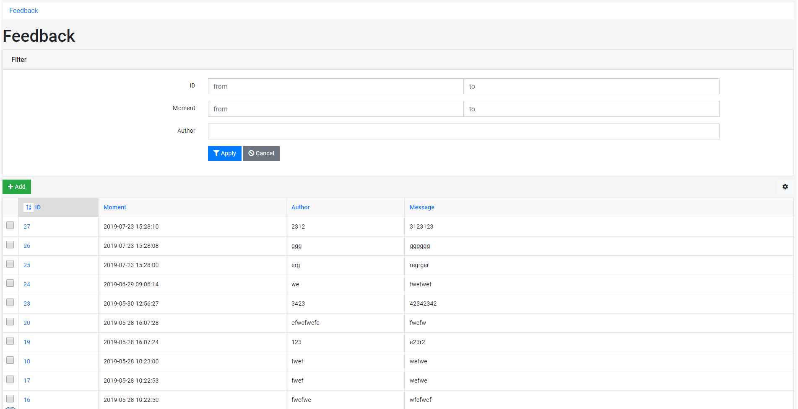
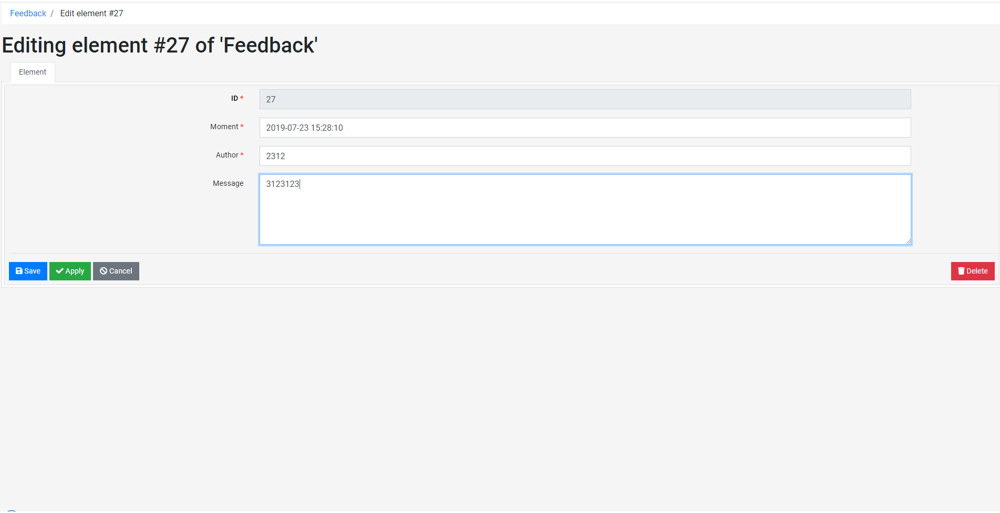

Модель
namespace Docs;
class Feedback extends \BlackFox\SCRUD {
public $fields = [
'ID' => self::ID,
'MOMENT' => [
'TYPE' => 'DATETIME',
'NAME' => 'Момент',
'NOT_NULL' => true,
],
'AUTHOR' => [
'TYPE' => 'STRING',
'NAME' => 'Автор',
'NOT_NULL' => true,
],
'MESSAGE' => [
'TYPE' => 'TEXT',
'NAME' => 'Сообщение',
],
];
public function Create($element) {
$element['MOMENT'] = time();
return parent::Create($element);
}
}
Контроллер
namespace Docs;
class UnitFeedback extends \BlackFox\Unit {
public function Default() {
$RESULT = Feedback::I()->Select([
'SORT' => ['ID' => 'DESC'],
'LIMIT' => 10,
]);
return $RESULT;
}
public function AddFeedback(array $feedback) {
if ($feedback['AUTHOR'] === 'Reuniko') {
throw new \BlackFox\ExceptionAccessDenied();
}
$ID = Feedback::I()->Create($feedback);
$this->Redirect("?ID={$ID}", 'Ваш отзыв был добавлен');
}
}
\Docs\UnitFeedback::Run();
Вью
<div class="row m-5">
<div class="col">
<? foreach ($RESULT as $feedback): ?>
<div>
<strong title="<?= $feedback['MOMENT'] ?>">
<?= $feedback['AUTHOR'] ?>
</strong>:
<span><?= $feedback['MESSAGE'] ?></span>
</div>
<? endforeach; ?>
</div>
<div class="col">
<form method="post">
<?
\BlackFox\Form::Run([
'SCRUD' => \Docs\Feedback::I(),
'FIELDS' => ['AUTHOR', 'MESSAGE'],
'DATA' => $_REQUEST['feedback'] ?: [],
'ELEMENT' => 'feedback',
]);
?>
<button class="btn btn-success" type="submit" name="ACTION" value="AddFeedback">Добавить отзыв</button>
</form>
</div>
</div>
Результат
Анна: Разобралась за пять минут, синтаксис ORM очень читаемый.
Максим: Уже два года в продакшене, ни разу не пожалел.
Ольга: Adminer избавил от написания собственной админки.
Том: В документации не хватает примеров, но сам код чистый.
Игорь: Виртуальные корни — отличная идея для мультисайтов.
Контроллер
\BlackFox\Adminer::Run(['SCRUD' => Docs\Feedback::I()]);
Результат
административный интерфейс


Парадигмы
-
Отказ от обратной совместимости
- Ничто не ограничивает фреймворк в развитии
- Обновление через git pull
-
Отказ от правил и ограничений
- Предоставляет только рекомендации
- Творите в своем стиле
- Упрощает и ускоряет разработку
-
Отказ от 100% тестирования
- Тесты только в самых нужных местах
- Сперва код, потом тесты
-
Фокус на программиста, а не на пользователя
- Логика и структуры — в коде, контент — в базе данных
- Для проектов, готовых позволить себе программиста на полную ставку
-
Фокус на внешних PHP библиотеках
- Содержит минимум необходимого
- Можно изучить очень быстро
-
Баланс между простотой и сложностью
- Простые и доступные интерфейсы
- Сложная, но устойчивая логика внутри
Фичи
- Независимые репозитории между фреймворком и вашим кодом
- Простая маршрутизация
- Возможность переопределять файлы и классы фреймворка
- Автоматическая синхронизация структур таблиц
- Экстремально простой формат массива для фильтрации
- One-many, many-one, many-many связи
- Административная страница для каждой таблицы
- Пользовательские типы данных
- Поддержка мультиязычности
- Наследование шаблонов